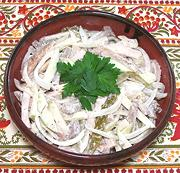

|
Prague SaladCzech Republic - Prazský Salát | ||||
| Makes: Effort: Sched: DoAhead: |
2-1/2 # ** 5 hrs Yes |
In the Czech Republic this is a popular restaurant salad, or at least it was in the days of Communist Czechoslovakia (all my Czech cookbooks are from that era). | |||
|
10 10 10 8 8 1-1/2 1/3 1/4 1/2 |
oz oz oz oz oz T t t c |
Veal, roasted (1) Pork, roasted Pickles (2) Onion, sweet Apple, sour Lemon Juice Salt Pepper Mayonnaise (2) |
Make - (5 hrs - 45 min work + chill (exclusive of roasting meats))
|